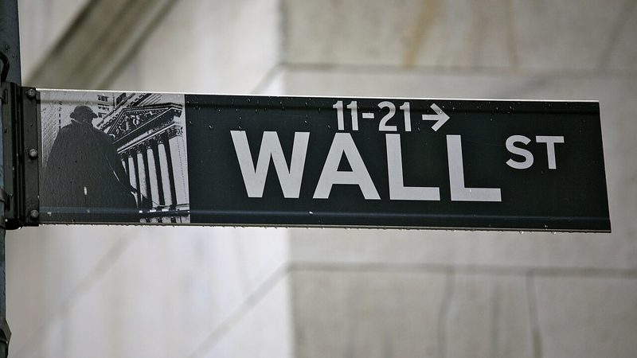
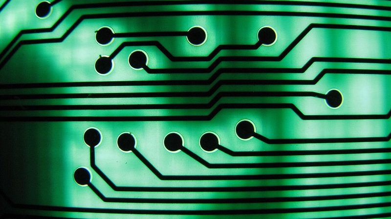
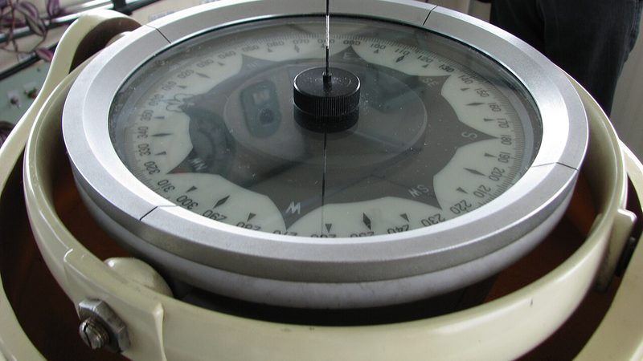
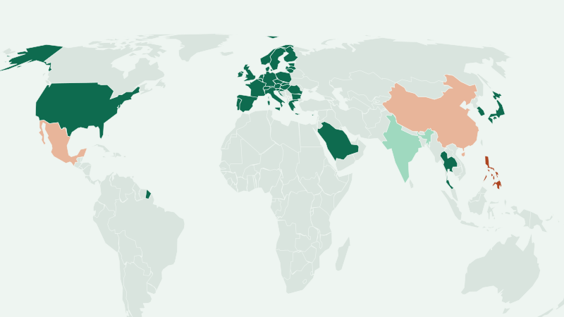

Research Pipeline
Markets, tech and geopolitics at a glance. Newest work from every desk.
Markets · latest brief
GCGold
3,887.00
−4.61% week
04:58 BKK16:58 ET
NQNasdaq 100
27,905.25
+3.03% week
04:58 BKK16:58 ET
6EEuro
1.10355
−0.97% week
04:58 BKK16:58 ET
DXYDollar index
103.41
+1.09% week
04:58 BKK16:58 ET
US10Y10-yr yield
5.15%
+29.5 bp week
02:59 BKK14:59 ET
VIXVolatility
19.30
−24.73% week
04:15 BKK16:15 ET
CLWTI crude
88.98
−2.04% week
04:58 BKK16:58 ET
ESS&P 500
7,559.00
+2.12% week
04:58 BKK16:58 ET
BTCBitcoin
68,201
−9.96% week
05:08 BKK17:08 ET
From April's weekly wrap tiles, Sat Nov 14 (source file). % change is the weekly change. Values exactly as published; "n/a" = not provided. + up, − down.
Latest from each section
April · daily briefsJensen Huang is out at Nvidia, and Nasdaq futures are sliding into London at 28,318.00 (−0.23%), right at their session low. Gold futures bounced to 3,917.7 (+0.83%) after three down days. Euro futures are flat at 1.1072 (+0.03%). Euro-area GDP at 17:00 BKK and US producer prices (PPI) at 20:30 BKK decide the sessionLatest: Fri Nov 13

Jim · trade sheetsThe market storyLatest: Fri Nov 13

April · weekly wrapDemocrats took Congress, AI sold off hard, and payrolls shocked hotter.Latest: Sat Nov 7

Sun · weekly techTop hit: Anthropic ships Claude Fable and Mythos 5.2, then opens its IPO roadshow (score 9)Latest: Thu Nov 12

Power Rankings#1 Alphabet at 93.5, of 48 companies rankedLatest: Thu Nov 12

Morgan · idea tracker2 open, 2 closed ideasMorgan's Trade Tracker

Warren · Spheres of InfluenceThe vote moved the price, not the straitLatest: Wed Nov 11

Warren · market watchBiggest mover: Japan +6.3% · 2 value picksLatest: Sun Nov 15
Morgan · market classroomTyler's study notes: market concepts, one page each1 of 30 lessons · Open the classroom →
Power Rankings · top 5
Week of Thu Nov 12 · power score out of 100
- 1Alphabet▲193.5
- 2TSMC▲192.0
- 3Nvidia▼289.5
- 4Microsoft=86.5
- 5Anthropic Private▲385.0
Move = change in rank vs last week; + climbed, − fell.
Full rankings →Spheres of Influence
Top 5 weighted moat scores (1–10), Thu Oct 15 to Wed Nov 11
- United States
- NATO
- Big Tech & AI labs (US-aligned)
- IMF & World Bank
- China
Moved since last issue: no score changes.
Board position →Morgan's tracker
Ideas only, never traded · benchmark QQQ
Hit rate · 2 closed
Open ideas
2
4 logged in total
Updated 2026-11-12 11:40 BKK.
Open the tracker →This week
Week of Mon Nov 16–Sun Nov 22 · all times Bangkok (BKK, UTC+7)
Mon Nov 16
- ~12:55April · pre-London brief
- 15:00 · 20:00Jim's windows: London GC/6E, NY GC/NQ
- ~19:25April · pre-NY brief
Tue Nov 17
- ~12:55April · pre-London brief
- 15:00 · 20:00Jim's windows: London GC/6E, NY GC/NQ
- ~19:25April · pre-NY brief
Wed Nov 18
- 06:00Warren · Spheres of Influence
- ~12:55April · pre-London brief
- 15:00 · 20:00Jim's windows: London GC/6E, NY GC/NQ
- ~19:25April · pre-NY brief
Thu Nov 19
- 06:00Weekly Tech Updates (Sun)
- ~12:55April · pre-London brief
- 15:00 · 20:00Jim's windows: London GC/6E, NY GC/NQ
- ~19:25April · pre-NY brief
- by 12:00Power Rankings (Sun 05:30, Warren 10:30, Morgan 12:00)
Fri Nov 20
- ~12:55April · pre-London brief
- 15:00 · 20:00Jim's windows: London GC/6E, NY GC/NQ
- ~19:25April · pre-NY brief
Sat Nov 21
- 06:00April · Weekly Markets Wrap
Sun Nov 22
- 06:00Warren · Market Watch
- Our briefs (routine schedule)
- Jim's trading windows
- Market events named in the latest wrap / brief